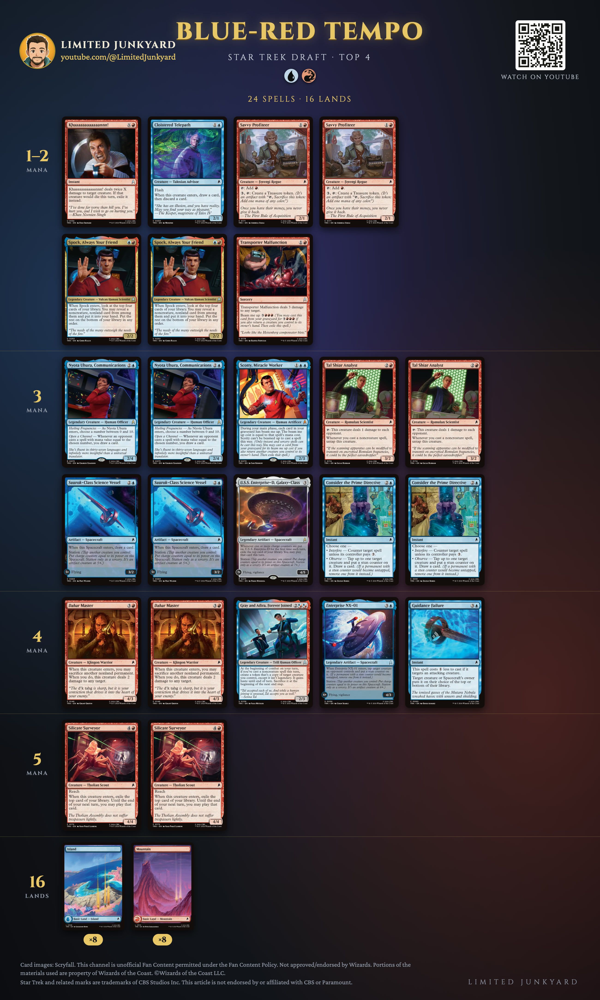
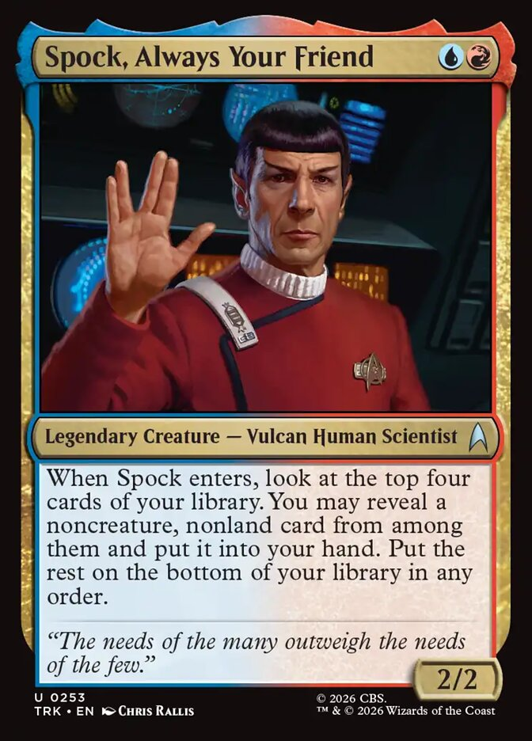
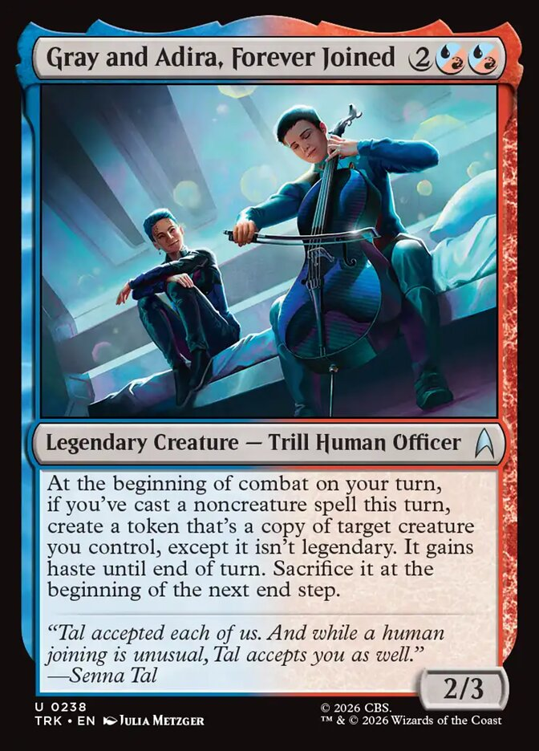
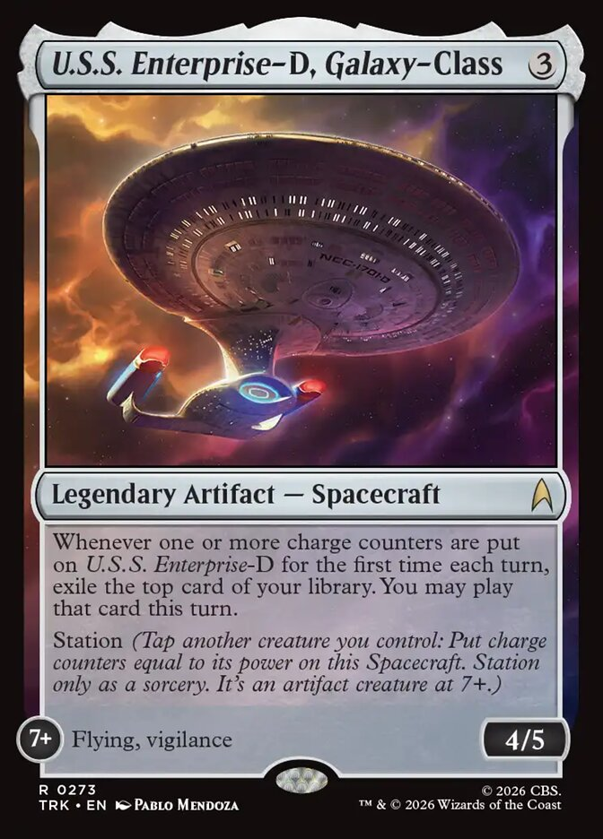

Home · Star Trek
Blue-Red Tempo: The Top 4 Draft Deck That Won My Second Star Trek Prerelease
My second Star Trek prerelease ended in a Top 4 draft. I drafted blue-red, and won the tournament with it. This is the deck, and why it drew so many cards.
My summary, written the same day:
“The blue red deck was sweet, I was drawing sooo many cards, copying Spock all the time, drawing my deck and spacecrafts winning in the air. A real tempo deck, was a ton of fun.”Balazs, Limited Junkyard

The decklist
Creatures (15)
- 2 Savvy Profiteer
- 2 Spock, Always Your Friend
- 1 Cloistered Telepath
- 2 Tal Shiar Analyst
- 1 Scotty, Miracle Worker
- 2 Nyota Uhura, Communications
- 1 Gray and Adira, Forever Joined
- 2 Dahar Master
- 2 Silicate Surveyor
Spacecraft (4)
- 2 Suurok-Class Science Vessel
- 1 U.S.S. Enterprise-D, Galaxy-Class
- 1 Enterprise NX-01
Instants and sorceries (5)
- 1 Khaaaaaaaaaaaannn!
- 1 Transporter Malfunction
- 2 Consider the Prime Directive
- 1 Guidance Failure
Lands (16)
- 8 Island
- 8 Mountain
The Spock machine
Spock, Always Your Friend costs two. When he enters, he looks at the top four cards of your library and hands you a noncreature, nonland card from among them. Fine on its own.
Then Gray and Adira, Forever Joined: at the beginning of combat on your turn, if you've cast a noncreature spell this turn, they make a hasty token copy of one of your creatures. The copy isn't legendary, so the legend rule leaves it alone, and it enters, so Spock's trigger fires again.
Cast a noncreature spell, copy Spock, dig four cards for the next noncreature spell. Next turn, again. That's "copying Spock all the time" on paper, and the deck runs two Spocks to make sure.
Nine of the 24 spells are noncreature, and four of those are Spacecraft. A Spacecraft is an artifact, so Spock can find it, Gray and Adira count it, and the two Tal Shiar Analysts untap for it and ping again.
Where all the cards came from
Two Suurok-Class Science Vessels draw a card when they enter. Two Consider the Prime Directive either counter a spell unless they pay three, or stun a creature and draw. Cloistered Telepath loots at flash speed. Two Silicate Surveyors exile the top card and let you play it. U.S.S. Enterprise-D does the same every turn it first gets charge counters. Two Nyota Uhuras draw whenever the opponent casts a spell of the number you named.
And Scotty, Miracle Worker: in your main phase, every instant and sorcery in your graveyard can be cast again for its mana cost, if you return another creature you control to your hand. Return Spock, cast him again, dig four more. Transporter Malfunction has the same trick built in.
Winning in the air
The ground creatures have a second job: tapping to station the ships. Suurok-Class flies at 5 charge counters, Enterprise NX-01 at 6, Enterprise-D at 7. Dahar Master and Silicate Surveyor have 4 power: tap two of them (or one, two turns running) and any of these ships is flying.
The tempo half keeps the way clear. Guidance Failure puts an attacker on top or bottom of its owner's library (their choice) for three mana. Consider the Prime Directive and Enterprise NX-01 stun a blocker. Khaaaaaaaaaaaannn! and Transporter Malfunction remove things, and Dahar Master shoots for 2 if you sacrifice another nonland permanent (a Treasure from Savvy Profiteer counts).
Key cards

Spock, Always Your Friend
Two mana, a 2/2, and the best noncreature, nonland card of your top four. Every copy and every re-cast digs again.

Gray and Adira, Forever Joined
The copy machine. Any noncreature spell, including a Spacecraft, turns on a hasty copy of your best creature each turn. Copying a Spock is a card. Copying a Silicate Surveyor or a Dahar Master works too.

U.S.S. Enterprise-D, Galaxy-Class
Three mana, any deck, for an extra card every turn you charge it, then a 4/5 flying, vigilant ship at 7 counters. My rares page calls it a Bomb.
More from Limited Junkyard
- Star Trek Sealed: This Is How You Win: the first prerelease I won, in a video.
- The Star Trek prerelease guide (video)
- Prerelease cheat sheet, two pages, print it for your deck box
- My top 10 commons and uncommons in each color, the ten best in each color, ranked
- Every common and uncommon rated, a grade and a reason for each one
- Every rare and mythic rated, the bombs, the traps, and everything between
- New videos every week: youtube.com/@LimitedJunkyard
Sources. The decklist is read from Balazs's photo of the deck; every card name is checked against Scryfall's card data. All 40 cards are visible in the photo: 24 spells, 8 Island and 8 Mountain. One of his two Nyota Uhura is a showcase printing and some of his basics come from other sets; the deck image shows the standard Star Trek printings.